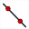
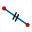
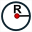

Since version 5.0, a much more friendly-user interface is available.
Icons on the left toolbar are now grouped by type.
Clicking on the blue arrow on the right (or double-clicking an icon) of an icon makes pop-up an horizontal menu with all the icons available for the type of object. The clicked tool replaces the icon on the left.
Here is an example of the first toolbar relative to points. :
The  icon ending some of these toolbars offers other tools of less common usage.
icon ending some of these toolbars offers other tools of less common usage.
|
Select this tool to move a point (free point or linked point), a display or increase or decrease the size of an angle mark. You can also use this tool to translate the whole figure. |
Groups all the icons for the creation and modification of points. Some of these icons may not appear if the tool is not usable. |
|
 |
Groups all the icons for lines creation. |
|
Groups icons for creation of segments, rays, vectors. |
|
Groups all the icons for the creation of circles and arcs of circle. |
|
Groups all the icons for the creation of lines and polygons. |
 |
Groups all the icons for the creation of segment marks or angle marks. |
|
Groups all the icons for the creation of point locus, function curves, recurrent sequence graphs and object locus. |
Groups all the icons for the use of geometrical transformations and virtual protractor. |
|
|
Groups all the icons for the creation of measure. |
Groups all the icons for text, LaTeX, value display, image or macro. |
|
|
Groups all the icons for the creation of calculations, cursors, functions, frames, sequences (real or complex). |
Groups all the icons for the creation of surfaces and half-planes. |
To be noted : Some icons will be available only if the context is adapted.
For instance, the

icon will not be available if the figure doesn't include an unity length.